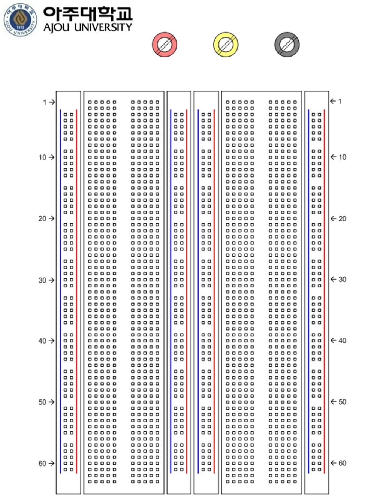

전원: VCC = +5V · GND = GND · 미사용 입력핀을 띄워 두지 않는다 (플로팅 금지) — GND 로 내릴지 VCC 로 올릴지는 아래 공통 규칙을 본다
진리표 — 확인 칸: ✓ 일치 / 값 = 불일치 시 실제로 관찰한 값 / 공란 = 미확인. 표를 통째로 진행하지 않았으면 그 표 아래에 진행하지 않았음 이라고 적는다.
스텝표 — 회색 칸에 읽은 값을 단위와 함께 적는다 (예: 3.2 V, 47 Ω). 확인 칸이 없다: 대조할 예상값이 없는 표다.
파형 — 격자에 직접 그리고 판독 조건 줄(V/div·time/div·프로브·모드)을 채운다. 조건이 없으면 결과보고서에서 화면의 칸을 볼트로 환산할 수 없다.
오늘의 흐름
| 순서 | 회로 | 쓰는 IC | 기록할 표 |
|---|
| 1/5 | E6.P1 · R-S Latch with Enable (Gate 이용) | 74HC00 | T1 R-S Latch with Enable 특성표 |
| 2/5 | E6.P2 · D Latch with Enable (Gate 이용) | 74HC00 · 74HC04 | T2 D Latch with Enable 특성표 |
| 3/5 | E6.P3 · D F/F (IC 이용) | 74HC74 | T3 D F/F 특성표 |
| 4/5 | E6.P4 · J-K Latch with Enable (Gate 이용) | 74HC10 · 74HC00 | T4 J-K Latch with Enable 특성표 |
| 5/5 | E6.P5 · J-K F/F (IC 이용) | 74HC76 | T5 J-K F/F 특성표 |
공통 규칙
- 전원핀이 IC 마다 다르다. 74HC00·74HC04·74HC10·74HC74 는 DIP-14 라 pin 14 → VCC(+5V), pin 7 → GND 다. 그런데 74HC76 만 DIP-16 이고 VCC 가 pin 5, GND 가 pin 13 이다. 14·7 로 착각해 꽂으면 pin 14 는 1Q', pin 7 은 2PRE 라서 출력핀에 +5V 를 물리게 된다 — 이번 주에 칩을 죽이는 가장 빠른 길이다. (저장소 from_the_past/정리/소자_데이터시트_및_미디어/1_데이터시트_및_핀아웃/74-76-diagram.jpg 에 PIN 5 = VCC, PIN 13 = GND 라고 그림 안에 명기되어 있다)
- 미사용 입력핀 처리 규칙이 실험1 과 다르다. 실험1 은 "미사용 입력은 전부 GND" 였지만, 이번 주 F/F 에는 active-low 비동기 입력(74HC74 의 SD·RD, 74HC76 의 PRE·CLR)이 있다. - 일반 입력(게이트 입력, D, J, K, CP/CLK) → GND - active-low 비동기 입력 → VCC. 이걸 GND 로 내리면 그 F/F 은 영구히 preset/clear 에 걸린 상태가 되고, SD·RD 를 동시에 LOW 로 내리면 Q·Q' 가 둘 다 HIGH 가 되는 규정 외 상태다 - 미사용 출력핀은 개방한다. 출력끼리 묶거나 GND 로 내리면 칩이 죽는다 - 플로팅 금지. 쓰지 않는 F/F 이어도 입력은 전부 묶는다 — CMOS 입력이 뜨면 자기발진해서 쓰고 있는 쪽 F/F 의 전원 레일을 흔든다
- 입력 S·R·D·J·K 와 인에이블/클럭 C 는 점퍼선으로 +5V(=1) 또는 GND(=0) 에 직접 물린다. 띄워두지 않는다 (교안이 스위치 소자를 지정하지 않는다 — M6)
- C 를 어떻게 움직이는가가 이번 주의 전부다. - E6.P1·E6.P2·E6.P4 는 레벨 인에이블이다. C=1 로 유지한 채 입력을 바꿔 반영을 보고, C=0 으로 내린 뒤 입력을 바꿔 출력이 안 변하는 것(유지)을 본다. 표의 x x 0 행이 이 조작이다 - E6.P3·E6.P5 는 엣지 트리거다. C 점퍼를 GND 에 꽂았다가 +5V 로 옮기는 한 번의 동작이 한 개의 엣지여야 하는데, 맨 점퍼선은 채터링(bounce)해서 한 번 꽂는 동안 엣지를 여러 개 만든다. J=K=1 토글에서는 홀수 번 튀었는지 짝수 번 튀었는지에 따라 결과가 뒤집혀서 "토글이 안 된다"처럼 보인다. 한 번 조작할 때마다 Q·Q' 를 읽고, 예상과 다르면 배선보다 바운스를 먼저 의심한다 (M7)
- LED 는 애노드 쪽에 330Ω 직렬, 캐소드 → GND. Q 와 Q' 에 각각 하나씩, 항목마다 LED 2개를 단다. Q·Q' 는 언제나 서로 반대여야 하므로 두 LED 가 동시에 켜지거나 동시에 꺼지면 그 자리에서 배선 오류다 (S=R=1, C=1 금지 상태는 예외 — T1 참조)
- 물리 칩 재사용: 교안 p6 준비물은 74HC04 1개 / 74HC00 2개 / 74HC76 1개 / 74HC10 1개 / 74HC74 1개 / LED 4개 / 330Ω 4개다. 아래에서 U1·U2·U6 은 같은 74HC00 한 개를 항목마다 재배선해 쓰는 것이다(동시에 여러 회로를 올릴 수 없다). 74HC00 이 2개인 이유는 교안에 없다 — E6.P4 를 두 칩에 나눠 꽂아도 되고 예비용이어도 된다
- 핀아웃 출처: - 74HC00 — 교안 자체로 확인됨. 실험6 교안 p7·p8·p10 회로도가 게이트 핀을 (1,2→3)·(4,5→6)·(9,10→8)·(12,13→11) 로 라벨한 것을 300 DPI 렌더 후 vision 으로 판독했다. 아래 참조 핀아웃 표와 일치한다 - 74HC04 — 저장소 실물 데이터시트 from_the_past/정리/소자_데이터시트_및_미디어/1_데이터시트_및_핀아웃/datasheet.pdf (Philips 74HC04 Hex inverter, PINNING 절). 교안 p8 회로도가 이 인버터를 1→2 로 라벨한 것과도 일치한다 - 74HC10 — 게이트1·게이트2 만 교안으로 확인됨. 교안 p10 회로도가 (1,2,13→12)·(3,4,5→6) 를 라벨한다. 게이트3 (9,10,11→8) 은 교안에 없고 표준 7410 배치를 근거로 적었다 (미확정 M1) - 74HC74 — 신호핀 12개 전부 교안으로 확인됨. 교안 p9 의 IC 심볼(mna418)이 1RD=1, 1D=2, 1CP=3, 1SD=4, 1Q=5, 1Q'=6, 2Q'=8, 2Q=9, 2SD=10, 2CP=11, 2D=12, 2RD=13 을 명기한다. VCC(14)·GND(7) 은 심볼에 없다 — 12개 신호핀이 7·14 만 비워두고 다 채워진 표준 DIP-14 배치라는 정황 근거로 적었다 (미확정 M2) - 74HC76 — 저장소 핀아웃 그림으로 확인됨. from_the_past/정리/소자_데이터시트_및_미디어/1_데이터시트_및_핀아웃/74-76-diagram.jpg (7476 dual J-K F/F 핀 배치 + 기능표, PIN 5 = VCC / PIN 13 = GND 명기). 교안 p11 회로도가 라벨한 2CLK=6, 2PRE=7, 2CLR=8, 2J=9, 2Q'=10, 2Q=11, 2K=12 일곱 핀이 이 그림과 정확히 일치하므로 나머지 핀도 같은 그림을 따른다 - 표준 74HC DIP-14/16 배치 가정은 위에서 74HC10 게이트3 과 74HC74 의 7·14 두 곳뿐이다. 둘 다 미확정 표에 올렸다
참조 핀아웃
게이트 IC (DIP-14, VCC 14 / GND 7):
| IC | 게이트1 | 게이트2 | 게이트3 | 게이트4 | VCC | GND |
|---|
| 74HC00 (quad 2-input NAND) | 1,2 → 3 | 4,5 → 6 | 9,10 → 8 | 12,13 → 11 | 14 | 7 |
| 74HC10 (triple 3-input NAND) | 1,2,13 → 12 | 3,4,5 → 6 | 9,10,11 → 8 | — | 14 | 7 |
74HC04 (hex inverter): 1→2, 3→4, 5→6, 9→8, 11→10, 13→12. VCC 14, GND 7.
74HC10 은 게이트 1·2 의 핀 순서가 뒤죽박죽이다. 게이트1 은 입력이 1,2,13 이고 출력이 12 라서 칩의 위아래를 가로지른다. 게이트2 만 3,4,5→6 으로 얌전히 붙어 있다. 실험1 의 쿼드 2입력 감각(1,2→3)으로 꽂으면 게이트1 의 13번 입력을 빠뜨린다 — 3입력 NAND 는 입력 하나가 뜨면 출력이 계속 0 근처에서 논다.
74HC74 (dual D F/F, DIP-14):
| 신호 | F/F 1 | F/F 2 |
|---|
| D | 2 | 12 |
| CP (클럭, 라이징 엣지) | 3 | 11 |
| SD (Preset, Active Low) | 4 | 10 |
| RD (Clear, Active Low) | 1 | 13 |
| Q | 5 | 9 |
| Q' | 6 | 8 |
VCC 14, GND 7.
74HC76 (dual J-K F/F, DIP-16):
| 신호 | F/F 1 | F/F 2 |
|---|
| J | 4 | 9 |
| K | 16 | 12 |
| CLK | 1 | 6 |
| PRE (Preset, Active Low) | 2 | 7 |
| CLR (Clear, Active Low) | 3 | 8 |
| Q | 15 | 11 |
| Q' | 14 | 10 |
VCC 5, GND 13. 14·7 이 아니다.
미확정 사항 — 실험실에서 확인할 것
| 확인 | 항목 | 내용 | 확인 방법 |
|---|
| M1 | 74HC10 게이트3(pin 9,10,11 입력 → pin 8 출력) 배치가 교안으로 확인되지 않는다. 교안 p10 은 게이트1·2 만 라벨한다. 표준 7410 배치를 근거로 적었다. 틀렸다면 pin 9·10·11 중 하나가 출력이고, 거기에 GND 를 물리면 칩이 죽는다 | 실물 칩 각인 확인 후 벤더 데이터시트 대조. 대조하지 못했다면 게이트3 입력을 GND 로 내리지 말고 pin 8·9·10·11 을 전부 개방으로 둔다 — 플로팅 입력은 바람직하지 않지만 출력 단락보다 안전하다 |
| M2 | 74HC74 의 VCC(pin 14)·GND(pin 7) 가 교안에 없다. 교안 p9 심볼이 신호핀 12개(1~6, 8~13)를 다 라벨하고 7·14 만 비워둔 표준 DIP-14 배치라는 정황으로 적었다. 저장소에 74HC74 데이터시트가 없다 | 실물 칩 각인 확인 후 벤더 데이터시트 대조 |
| M3 | 74HC74 의 1SD(pin 4)·1RD(pin 1) 를 어디에 묶을지 교안이 지정하지 않는다(p9 에 회로도가 없다). T3 이 비동기 동작을 요구하지 않으므로 둘 다 VCC(비활성)로 묶는 것이 우리 판단이다 | 실험실에서 Q·Q' 가 클럭 없이 변하면 이 두 핀을 먼저 본다. 조교가 preset/clear 관측을 추가로 요구하면 그때 스위치를 붙인다 |
| M4 | 74HC76 의 클럭 엣지 극성이 교안 안에서 모순된다. 교안 p11 특성표 C 열은 라이징 엣지 글리프인데(300 DPI vision 판독), 같은 슬라이드 IC 심볼의 CLK(pin 6) 에는 반전 버블이 그려져 있고, 저장소 74-76-diagram.jpg 의 기능표도 폴링 엣지에서 데이터가 전달되고 라이징 엣지에서는 No Change 라고 명기한다. 즉 실물은 C: 1→0 에서 상태가 바뀔 가능성이 높다. 배선은 이 모순과 무관하다(C 는 pin 6 하나) — 달라지는 것은 언제 읽느냐 뿐이다 | 실험실에서 C 를 0→1 로 올렸을 때 Q 가 안 변하고 1→0 으로 내릴 때 변하면 폴링 엣지 소자다. 명세 T5 는 교안 원문(0->1)을 그대로 보존한 것이 맞다 — 고치지 말고, 결과보고서에 실측 극성을 적어 대조한다 |
| M5 | LED 를 어디에 다는지 교안 회로도에 LED 가 한 개도 그려져 있지 않다. 명세의 device: [LED] 와 준비물(LED 4개·330Ω 4개)로부터 각 항목의 Q·Q' 에 하나씩(항목당 2개) 배치했다. 준비물이 4개인 이유는 교안에 없다 | 조교 지시 확인. 4개를 다 쓰라면 E6.P4 에서 74HC10 두 게이트의 출력(pin 12·pin 6)에 추가로 달면 앞단 동작이 보인다 |
| M6 | 교안이 입력 스위치/딥스위치를 지정하지 않는다. 점퍼선 직결로 가정했다 | 실험실 키트 확인 |
| M7 | E6.P3·E6.P5 의 클럭을 점퍼선으로 만들면 바운스가 생긴다. 교안에 디바운스 회로가 없다. 준비물의 남는 74HC00 한 개로 SR 디바운서를 만들 수 있지만 그러려면 SPDT(3단자) 스위치가 필요한데 준비물에 없다 | 실험실 키트에 디바운스된 푸시버튼이 있는지 확인. 없으면 조작마다 Q·Q' 를 읽어 토글 횟수를 세는 방식으로 진행한다 |
| M8 | 74HC 출력으로 LED 를 직접 구동한다. 330Ω 에서 약 9 mA 로 데이터시트 권장 구동 전류를 넘는다 | 교안 지시가 그러하므로 그대로 따르되, LED 가 어두우면 이를 먼저 의심 |
회로 1/5 · E6.P1 · R-S Latch with Enable (Gate 이용) · 기록: T1 · 판독: LED
준비 — 꽂는다: 74HC00
교안 p7 회로도 그대로. 74HC00 한 개의 게이트 4개를 전부 쓴다 — 이번 주에 미사용 입력핀이 하나도 없는 유일한 항목이다.
앞단 두 게이트가 C 로 입력을 막고(게이트1: (S·C)', 게이트2: (R·C)'), 뒷단 두 게이트가 교차결합 NAND 래치를 이룬다.
브레드보드 작도 (8행)
이 회로의 결선도가 아직 없다 — 격자에 직접 그린다

U1 = 74HC00 (quad 2-input NAND, DIP-14)
- pin 14 → VCC(+5V)
- pin 7 → GND
- pin 1 ← 입력 S
- pin 2 ← 입력 C (게이트1 = (S·C)')
- pin 3 → U1.pin9
- pin 4 ← 입력 C (C 는 pin 2 와 pin 4 두 곳으로 팬아웃한다)
- pin 5 ← 입력 R (게이트2 = (R·C)')
- pin 6 → U1.pin13
- pin 9 ← U1.pin3
- pin 10 ← U1.pin11 ★ 교차결합: 게이트4 출력(Q') → 게이트3 입력
- pin 8 → U1.pin12 ★ 교차결합: 게이트3 출력(Q) → 게이트4 입력
- pin 8 → LED_Q 애노드 (330Ω 직렬) → GND ※ Q
- pin 12 ← U1.pin8
- pin 13 ← U1.pin6
- pin 11 → LED_Q' 애노드 (330Ω 직렬) → GND ※ Q'
배선을 끝내고 반드시 확인한다 — 칩마다 따로 본다
U1 = 74HC00 (quad 2-input NAND, DIP-14)
- 미사용 입력핀: 없음 (게이트 4개 전부 사용)
- 미사용 출력핀: 없음
교차결합 두 줄(8→12, 11→10)이 이 회로의 전부다. 이 두 줄을 안 꽂으면 회로는 조용히 동작한다 — 다만 기억을 못 할 뿐이라 C=0 으로 내리는 순간 출력이 따라 죽는다. "유지가 안 된다"면 제일 먼저 볼 곳이 여기다. 두 줄을 서로 바꿔 꽂으면 (8→10, 11→12) 래치가 아니라 그냥 두 개의 인버터가 되어 Q·Q' 가 같이 움직인다.
S=R=1, C=1 (T1 4행)은 NAND 래치의 금지 상태다. 앞단 두 출력이 동시에 0 이 되어 Q·Q' 가 둘 다 1 이 된다 — 즉 LED 두 개가 동시에 켜진다. 다른 행에서 그러면 배선 오류지만, 이 행에서만은 정상이다. 교안 표는 이 칸의 Q(t) 를 1 로 적는다.
T1 · R-S Latch with Enable 특성표
출처: manual:p7
| S |
R |
C |
Q(t)예상 |
확인 |
| 0 | 0 | 1 | Q(t-1) | |
| 0 | 1 | 1 | 0 : Reset | |
| 1 | 0 | 1 | 1 : Set | |
| 1 | 1 | 1 | 1 | |
| X | X | 0 | Q(t-1) | |
사진: 완성 회로 1장 + 불일치 행마다 1장. 파일명 T1 row3.jpg 형식
회로 2/5 · E6.P2 · D Latch with Enable (Gate 이용) · 기록: T2 · 판독: LED
앞 회로의 점퍼선을 모두 걷는다 · 꽂는다: 74HC04 · 패키지는 두고 재배선한다: 74HC00
교안 p8 회로도 그대로. E6.P1 의 배선에서 R 자리에 74HC04 인버터를 끼워 D' 를 넣은 것이 전부다. 나머지 8줄은 E6.P1 과 완전히 같다.
> 교안 p8 회로도는 이 입력을 S 라고 라벨해 놓고 진리표 헤더는 D 라고 쓴다. > 같은 노드다 — E6.P1 의 S 자리가 곧 D 다.
브레드보드 작도 (16행)
이 회로의 결선도가 아직 없다 — 격자에 직접 그린다
U2 = 74HC00 (quad 2-input NAND, DIP-14) — U1 과 같은 물리 칩, 재배선
- pin 14 → VCC(+5V)
- pin 7 → GND
- pin 1 ← 입력 D (게이트1 = (D·C)')
- pin 2 ← 입력 C
- pin 3 → U2.pin9
- pin 4 ← 입력 C
- pin 5 ← U3.pin2 ★ D' — 여기가 E6.P1 과 다른 유일한 줄이다
- pin 6 → U2.pin13
- pin 9 ← U2.pin3
- pin 10 ← U2.pin11 ★ 교차결합 (Q' → 게이트3)
- pin 8 → U2.pin12 ★ 교차결합 (Q → 게이트4)
- pin 8 → LED_Q 애노드 (330Ω 직렬) → GND ※ Q
- pin 12 ← U2.pin8
- pin 13 ← U2.pin6
- pin 11 → LED_Q' 애노드 (330Ω 직렬) → GND ※ Q'
U3 = 74HC04 (hex inverter, DIP-14)
- pin 14 → VCC(+5V)
- pin 7 → GND
- pin 1 ← 입력 D (U2.pin1 과 같은 노드 — D 는 두 곳으로 팬아웃한다)
- pin 2 → U2.pin5 (D')
배선을 끝내고 반드시 확인한다 — 칩마다 따로 본다
U2 = 74HC00 (quad 2-input NAND, DIP-14) — U1 과 같은 물리 칩, 재배선
U3 = 74HC04 (hex inverter, DIP-14)
- 미사용 입력핀: pin 3, 5, 9, 11, 13 → GND
- 미사용 출력핀: pin 4, 6, 8, 10, 12 → 개방
인버터를 빠뜨리고 D 를 U2.pin5 에 바로 물리면 S=R=D 인 R-S 래치가 된다. 그러면 D=0, C=1 에서 유지, D=1, C=1 에서 금지 상태가 나와 T2 와 전혀 다른 표가 찍힌다. 회로는 멀쩡히 돌아가므로 눈으로는 안 잡힌다 — D=1, C=1 에서 LED 두 개가 같이 켜지면 인버터가 빠진 것이다.
T2 · D Latch with Enable 특성표
출처: manual:p8
| D |
C |
Q(t)예상 |
확인 |
| 0 | 1 | 0 | |
| 1 | 1 | 1 | |
| X | 0 | Q(t-1) | |
사진: 완성 회로 1장 + 불일치 행마다 1장. 파일명 T2 row3.jpg 형식
회로 3/5 · E6.P3 · D F/F (IC 이용) · 기록: T3 · 판독: LED
앞 회로의 점퍼선을 모두 걷는다 · 뺀다: 74HC00, 74HC04 · 꽂는다: 74HC74
교안 p9 에는 회로도가 없다. IC 심볼(핀 번호 포함)과 특성표 T3 만 있다. 아래 배선은 그 심볼의 핀 번호와 T3 에서 유도한 것이고, 비동기 입력 SD·RD 를 어디에 묶을지는 교안이 말해주지 않는다(미확정 M3).
브레드보드 작도 (8행)
이 회로의 결선도가 아직 없다 — 격자에 직접 그린다
U4 = 74HC74 (dual D F/F, DIP-14) — F/F 1 쪽만 쓴다
- pin 14 → VCC(+5V)
- pin 7 → GND
- pin 2 ← 입력 D (1D)
- pin 3 ← 입력 C (1CP — 라이징 엣지. 심볼의 CP 에 반전 버블이 없다)
- pin 4 → VCC ★ 1SD (Preset, Active Low) — 비활성으로 묶는다
- pin 1 → VCC ★ 1RD (Clear, Active Low) — 비활성으로 묶는다
- pin 5 → LED_Q 애노드 (330Ω 직렬) → GND ※ 1Q
- pin 6 → LED_Q' 애노드 (330Ω 직렬) → GND ※ 1Q'
배선을 끝내고 반드시 확인한다 — 칩마다 따로 본다
U4 = 74HC74 (dual D F/F, DIP-14) — F/F 1 쪽만 쓴다
- 미사용 입력핀 (F/F 2): pin 12(2D), pin 11(2CP) → GND
- 미사용 입력핀 (F/F 2, active-low): pin 10(2SD), pin 13(2RD) → VCC
- 미사용 출력핀: pin 9(2Q), pin 8(2Q') → 개방
pin 1 과 pin 4 는 이 회로의 트랩이다. 교안 그림에 안 나오니 그냥 두기 쉬운데, SD·RD 는 클럭과 무관하게 출력을 강제하는 비동기 입력이다. 뜬 채로 두면 CMOS 입력이 아무 값이나 잡아 F/F 이 클럭과 상관없이 제멋대로 세트/클리어된다 — "클럭을 줘도 D 가 안 들어간다" 또는 "가만 놔둬도 값이 바뀐다"로 나타난다. 둘 다 active-low 이므로 VCC(HIGH)가 "아무 일도 하지 마"다. GND 가 아니다.
미사용 F/F 2 도 같은 이유로 2SD(10)·2RD(13)는 VCC 다. 여기만 습관대로 GND 로 내리면 SD·RD 동시 LOW 라는 규정 외 상태에 빠진다.
Q'(pin 6)은 F/F 이 내부에서 만들어 주는 출력이다 — 인버터를 따로 달지 않는다.
T3 · D F/F 특성표
출처: manual:p9
| D |
C |
Q(t)예상 |
확인 |
| 0 | 0->1 | 0 | |
| 1 | 0->1 | 1 | |
| X | 0 | Q(t-1) | |
사진: 완성 회로 1장 + 불일치 행마다 1장. 파일명 T3 row3.jpg 형식
회로 4/5 · E6.P4 · J-K Latch with Enable (Gate 이용) · 기록: T4 · 판독: LED
앞 회로의 점퍼선을 모두 걷는다 · 뺀다: 74HC74 · 꽂는다: 74HC10, 74HC00
교안 p10 회로도 그대로. 앞단이 2입력이 아니라 3입력 NAND(74HC10) 인 것이 E6.P1 과의 차이다. 세 번째 입력으로 반대쪽 출력을 되먹여서 J=K=1 일 때 토글이 나온다.
브레드보드 작도 (16행)
이 회로의 결선도가 아직 없다 — 격자에 직접 그린다
U5 = 74HC10 (triple 3-input NAND, DIP-14) — 게이트 2개 사용
- pin 14 → VCC(+5V)
- pin 7 → GND
- pin 1 ← U6.pin6 ★ Q' 되먹임 (게이트1)
- pin 2 ← 입력 J
- pin 13 ← 입력 C (게이트1 = (J·C·Q')', 출력이 pin 12 다)
- pin 12 → U6.pin1
- pin 3 ← 입력 C (C 는 pin 13 과 pin 3 두 곳으로 팬아웃한다)
- pin 4 ← 입력 K
- pin 5 ← U6.pin3 ★ Q 되먹임 (게이트2 = (K·C·Q)')
- pin 6 → U6.pin5
U6 = 74HC00 (quad 2-input NAND, DIP-14) — U1 과 같은 물리 칩, 게이트 2개만 사용
- pin 14 → VCC(+5V)
- pin 7 → GND
- pin 1 ← U5.pin12
- pin 2 ← U6.pin6 ★ 교차결합: Q' → 게이트1 입력
- pin 3 → LED_Q 애노드 (330Ω 직렬) → GND ※ Q
- pin 3 → U6.pin4 ★ 교차결합: Q → 게이트2 입력
- pin 3 → U5.pin5 ※ Q 되먹임 (Q 노드는 세 곳으로 팬아웃한다)
- pin 4 ← U6.pin3
- pin 5 ← U5.pin6
- pin 6 → LED_Q' 애노드 (330Ω 직렬) → GND ※ Q'
- pin 6 → U6.pin2 ★ 교차결합
- pin 6 → U5.pin1 ※ Q' 되먹임 (Q' 노드도 세 곳으로 팬아웃한다)
배선을 끝내고 반드시 확인한다 — 칩마다 따로 본다
U5 = 74HC10 (triple 3-input NAND, DIP-14) — 게이트 2개 사용
- 미사용 입력핀: pin 9, 10, 11 → GND ※ 게이트3. 단, M1 을 먼저 읽을 것
- 미사용 출력핀: pin 8 → 개방 ※ 게이트3 출력
U6 = 74HC00 (quad 2-input NAND, DIP-14) — U1 과 같은 물리 칩, 게이트 2개만 사용
- 미사용 입력핀: pin 9, 10, 12, 13 → GND
- 미사용 출력핀: pin 8, 11 → 개방
되먹임 방향을 뒤집으면 토글이 사라진다. J 쪽 게이트(U5 게이트1, 출력 pin 12)에는 Q' 가, K 쪽 게이트(U5 게이트2, 출력 pin 6)에는 Q 가 들어가야 한다 — 즉 "세트 게이트는 지금 리셋 상태일 때만 열린다" 는 뜻이다. 바꿔 꽂으면 J=K=1, C=1 에서 토글 대신 아무 일도 안 일어나거나 발진한다.
Q 노드(U6.pin3)와 Q' 노드(U6.pin6)는 각각 LED · 교차결합 · 74HC10 되먹임 세 갈래로 나간다. 브레드보드에서 한 갈래를 빠뜨리기 쉬우니 노드마다 세 줄을 세고 넘어간다.
T4 · J-K Latch with Enable 특성표
출처: manual:p10
| J |
K |
C |
Q(t)예상 |
확인 |
| 0 | 0 | 1 | Q(t-1) | |
| 0 | 1 | 1 | 0 : Reset | |
| 1 | 0 | 1 | 1 : Set | |
| 1 | 1 | 1 | Q(t-1)' : Toggle | |
| X | X | 0 | Q(t-1) | |
사진: 완성 회로 1장 + 불일치 행마다 1장. 파일명 T4 row3.jpg 형식
회로 5/5 · E6.P5 · J-K F/F (IC 이용) · 기록: T5 · 판독: LED
앞 회로의 점퍼선을 모두 걷는다 · 뺀다: 74HC10, 74HC00 · 꽂는다: 74HC76
교안 p11 회로도 그대로. F/F 은 두 개 들어 있는데 교안은 U3B, 즉 두 번째 F/F(핀 6~12)을 쓴다. 그 핀 번호를 그대로 따른다.
브레드보드 작도 (8행)
이 회로의 결선도가 아직 없다 — 격자에 직접 그린다
U7 = 74HC76 (dual J-K F/F, DIP-16) — F/F 2 쪽만 쓴다
- pin 5 → VCC(+5V) ★ 14 가 아니다
- pin 13 → GND ★ 7 이 아니다
- pin 9 ← 입력 J (2J)
- pin 12 ← 입력 K (2K)
- pin 6 ← 입력 C (2CLK — 엣지 극성은 M4 를 읽을 것)
- pin 7 → VCC ★ 2PRE (Active Low) — 교안 p11 회로도가 VCC 로 명시
- pin 8 → VCC ★ 2CLR (Active Low) — 교안 p11 회로도가 VCC 로 명시
- pin 11 → LED_Q 애노드 (330Ω 직렬) → GND ※ 2Q
- pin 10 → LED_Q' 애노드 (330Ω 직렬) → GND ※ 2Q'
배선을 끝내고 반드시 확인한다 — 칩마다 따로 본다
U7 = 74HC76 (dual J-K F/F, DIP-16) — F/F 2 쪽만 쓴다
- 미사용 입력핀 (F/F 1): pin 4(1J), pin 16(1K), pin 1(1CLK) → GND
- 미사용 입력핀 (F/F 1, active-low): pin 2(1PRE), pin 3(1CLR) → VCC
- 미사용 출력핀: pin 15(1Q), pin 14(1Q') → 개방
교안이 PRE·CLR 을 VCC 로 그려 놓은 것은 이번 주 회로도 중 유일하게 명시된 비동기 입력 처리다. E6.P3 의 74HC74 에는 그런 그림이 없을 뿐, 이유는 같다.
전원핀을 다시 확인한다. 74HC76 에서 pin 14 는 1Q'(출력), pin 7 은 2PRE(입력)다. 습관대로 pin 14 에 +5V, pin 7 에 GND 를 물리면 출력핀을 전원에 직결하는 것이라 그 자리에서 칩이 망가진다. 꽂기 전에 16핀인지 14핀인지 세고 들어간다.
T5 · J-K F/F 특성표
출처: manual:p11
| J |
K |
C |
Q(t)예상 |
확인 |
| 0 | 0 | 0->1 | Q(t-1) | |
| 0 | 1 | 0->1 | 0 : Reset | |
| 1 | 0 | 0->1 | 1 : Set | |
| 1 | 1 | 0->1 | Q(t-1)' : Toggle | |
| X | X | 0 | Q(t-1) | |
사진: 완성 회로 1장 + 불일치 행마다 1장. 파일명 T5 row3.jpg 형식